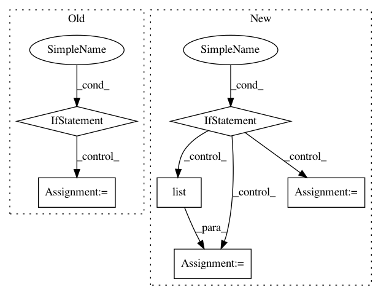

30120a183c81cc5d18af0a00ae35e3ec9e06063a,gpflow/misc.py,,initialize_variables,#Any#Any#Any#,76
Before Change
if variables is None:
initializer = tf.global_variables_initializer()
else:
if force:
initializer = tf.variables_initializer(variables)
else:
uninitialized = tf.report_uninitialized_variables(var_list=variables)
def uninitialized_names():
for uv in session.run(uninitialized):
yield uv.decode("utf-8")
// if isinstance(uv, bytes):
// yield uv.decode("utf-8")
// elif isinstance(uv, str):
// yield uv
// else:
// msg = "Unknown output type "{}" from `tf.report_uninitialized_variables`"
// raise ValueError(msg.format(type(uv)))
names = set(uninitialized_names())
vars_for_init = [v for v in variables if v.name.split(":")[0] in names]
initializer = tf.variables_initializer(vars_for_init)
session.run(initializer, **run_kwargs)
def is_tensor_trainable(tensor):
After Change
if variables is None:
initializer = tf.global_variables_initializer()
else:
if force:
vars_for_init = list(_initializable_tensors(variables))
else:
vars_for_init = list(_find_initializable_tensors(variables, session))
if not vars_for_init:
return
initializer = tf.variables_initializer(vars_for_init)
session.run(initializer, **run_kwargs)
In pattern: SUPERPATTERN
Frequency: 3
Non-data size: 6
Instances
Project Name: GPflow/GPflow
Commit Name: 30120a183c81cc5d18af0a00ae35e3ec9e06063a
Time: 2017-11-25
Author: art.art.v@gmail.com
File Name: gpflow/misc.py
Class Name:
Method Name: initialize_variables
Project Name: microsoft/nni
Commit Name: acc311dd3e15135ca35f69b0183e5b0f9f4beadf
Time: 2019-04-27
Author: 15094695770@163.com
File Name: tools/nni_gpu_tool/gpu_metrics_collector.py
Class Name:
Method Name: check_ready_to_run
Project Name: catalyst-team/catalyst
Commit Name: aab3902d4a7d55f5a86058854adc36b8a12c873f
Time: 2019-05-20
Author: ekhvedchenya@gmail.com
File Name: catalyst/dl/callbacks/base.py
Class Name: OptimizerCallback
Method Name: on_batch_end